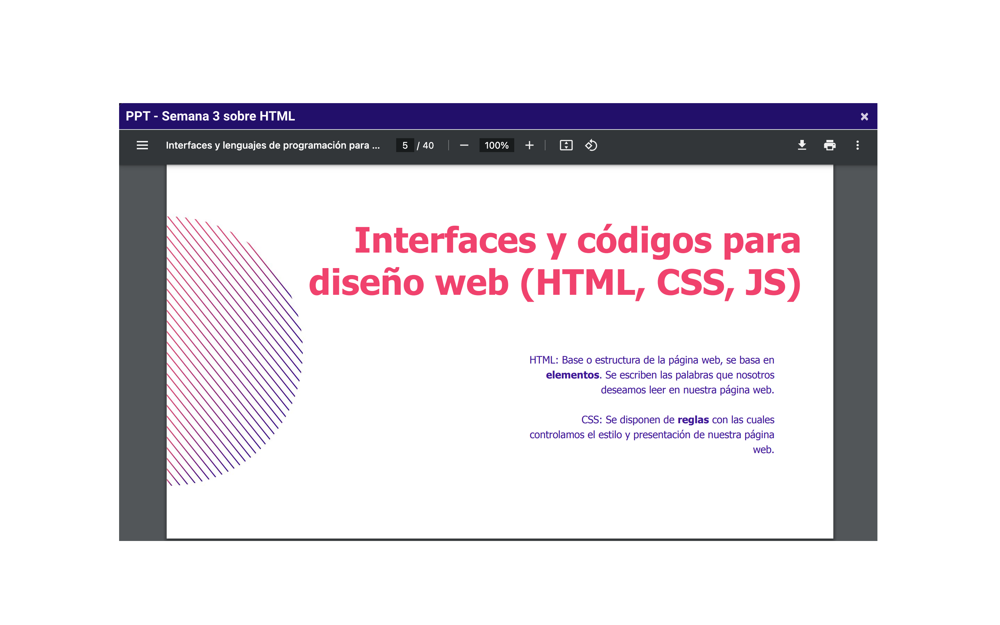

Interfaces y códigos para diseño web.
GRUPO 3
PROYECTO: 2 posibles ideas...
Qué Index.html es el archivo baase de una página web, el HTML es un lenguaje de marcado, compuesto por etiquetas que se emplean para crear la estructura completa de una página web y que el CSS se usa para darle estilo a una página web construida en HTML.

Clase 3, Presentación.
"Si la vida no te sonríe, ¡Hazle cosquillas!"
Anónimo
Presentación Interactiva, Semana 3
Segunda Actividad, Semana 3